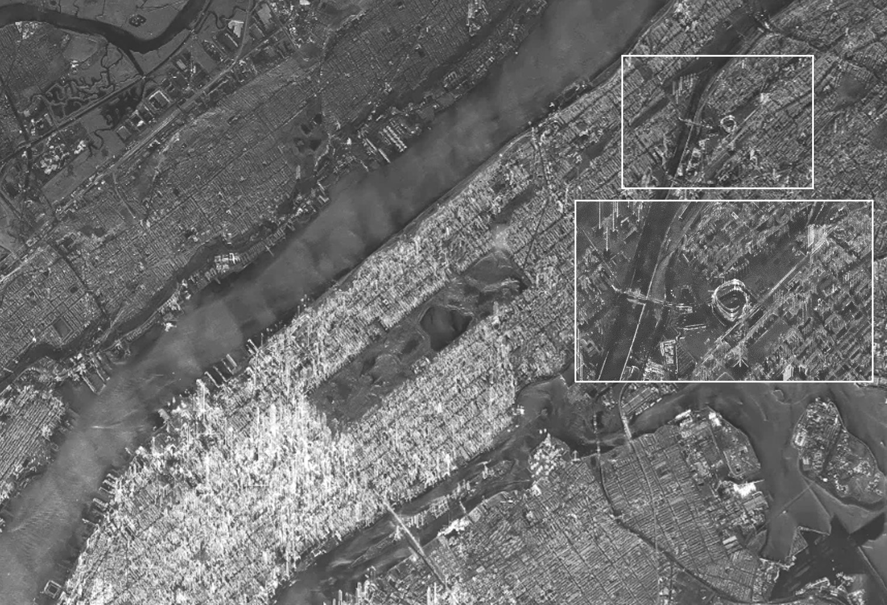
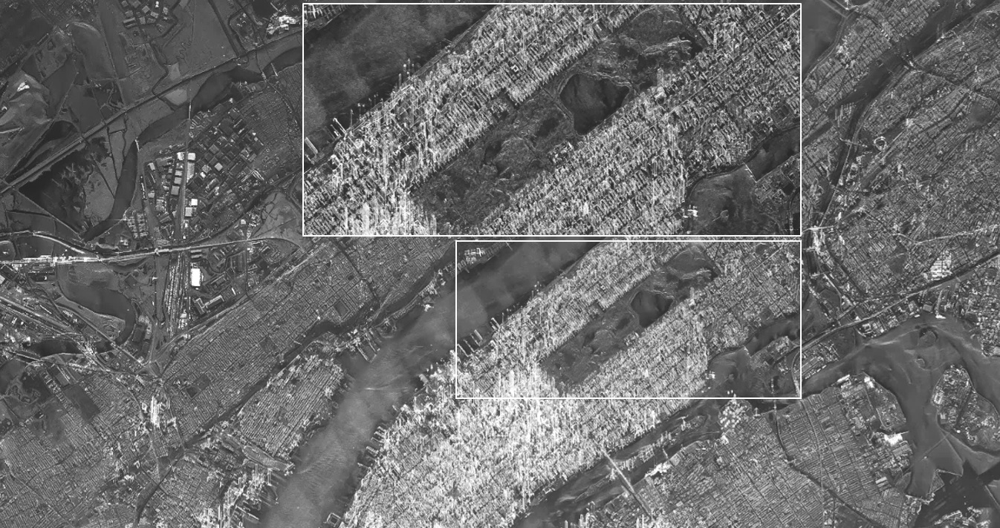
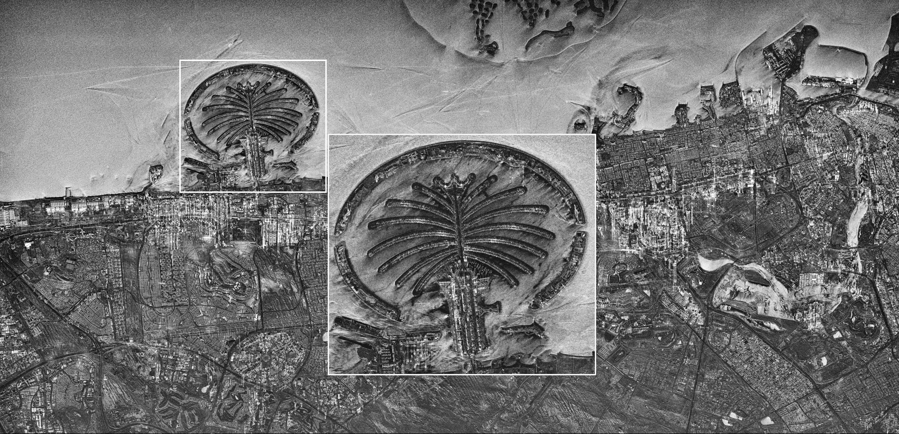
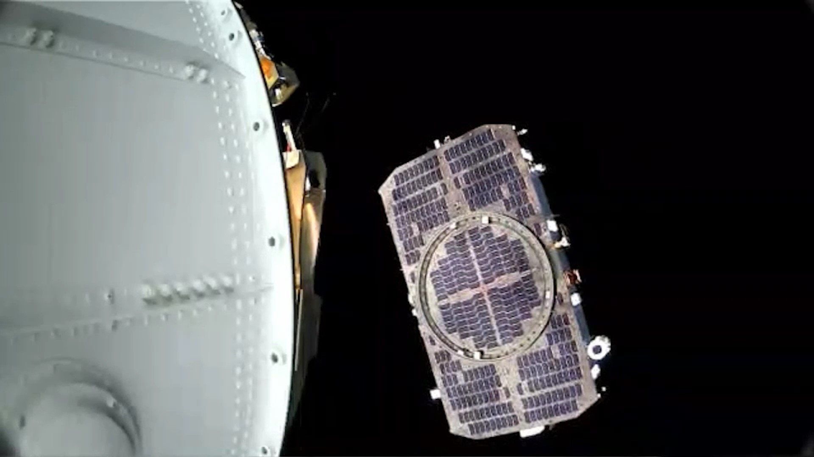

우리 민간 위성이 우주에서 내려다 본 지구 모습… 한화시스템, 소형 SAR 위성이 촬영한 영상 최초 공개
한화시스템(대표이사 어성철)은 지난해 12월 4일 우주에 오른 국내 최초 민간 관측위성 ‘소형 SAR 위성’이 지구 곳곳을 촬영한 영상(사진)을 18일 공개했다.
*SAR(합성개구레이다, Synthetic Aperture Radar): 우주에서 지상으로 전자파를 조사(照射)한 후 지표면에 부딪혀 되돌아오는 반사파를 시간 순으로 합성해 지표면의 지형도를 만들어 내는 영상 레이다 시스템.
한화시스템이 제작한 소형 SAR 위성이 지구 상공 650km의 우주에서 보내온 영상에는 미국 뉴욕 맨해튼의 화려한 스카이라인과 야자수를 형상화한 세계 최대 인공섬인 두바이 '팜 주메이라' 등 세계 관광명소 지형들이 포함됐다.
현재 운용 중인 선진국 SAR 위성 영상에 준하는 화질을 자랑하며, 특히 뉴욕 영상에는 맨해튼 도심 한복판에 위치한 센트럴 파크와 미국 메이저리그 뉴욕 양키스의 홈구장 '양키 스타디움' 등이 선명하게 담겼다. 이외에도 주요 교량·하천·공항까지 상세 식별과 관측이 가능하게 포착해냈다는 점에서 의의가 있다.
소형 SAR 위성은 발사 후 4개월간 하루에 지구를 15바퀴씩 돌며 6회 가량 지상 기지국과 양방향 통신을 수행하며, 지상 지형 정보 수집을 위한 시험운용을 진행 중이다.
 ≫ 한화시스템 소형 SAR 위성이 촬영한 美 메이저리그 뉴욕 양키스의 홈구장 '양키 스타디움' 모습  ≫ 한화시스템 소형 SAR 위성으로 촬영한 뉴욕 맨해튼 중심부의 센트럴파크  ≫ 한화시스템 소형 SAR 위성이 촬영한 야자수 모양 세계 최대 인공섬인 두바이 '팜 주메이라' 모습SAR 위성은 지상으로 전자파를 조사(照射·비춤)한 후 지표면에 부딪혀 되돌아오는 반사파를 시간 순으로 합성해 지표면의 지형도를 만들어 내기 때문에 ‘영상 레이다 위성’이라고도 불린다. SAR에 쓰이는 마이크로파는 짙은 구름도 통과할 수 있어 주∙야간 관계없이 악천후에도 지구관측 영상 촬영과 정보수집이 가능해 ▲기후·환경 및 재해·재난 감시 ▲건설·인프라 개발 ▲신에너지 탐사 ▲안보 등 분야에서 활용도가 높다. 관측 대상의 미세한 변화를 감지할 수 있어 도심 지반침하(싱크홀) 현상·산사태·물류량 변동 등을 예측할 수 있다.
한화시스템은 이번 공개를 통해 국내 최초로 민간기업에서 제작한 SAR 위성의 기술력을 입증했으며, 향후 촬영한 데이터에 대한 추가적인 검보정 작업을 통해 ▲도심 내 저층 건물과 자동차 ▲산림 지역의 동식물 ▲해상 선박 정보 등의 세부 대상 식별도 충분히 가능할 것으로 예상했다.
미국 시장조사기관 얼라이드 마켓 리서치(Allied Market Research)에 따르면 글로벌 위성 시장 규모는 2032년까지 연평균 8.1% 성장해 2032년엔 6157억 달러(한화 약 837조)에 도달할 것이며, 특히 위성 서비스 시장은 2026년에 1445억 달러(한화 약 197조)까지 성장할 것으로 전망한 바 있다.
* 원달러 환율 1360원 기준
한화시스템은 소형 SAR 위성 기술을 활용해 B2G(기업과 정부 간 거래)·B2B(기업 간 거래)용 ▲고해상도 위성 이미지 분석을 통한 환경 모니터링 ▲GIS(Geographic Information System) 지도 제작을 위한 데이터 분석 ▲위성 영상 정보 자동 융합·분석 등 위성 서비스 시장에서 다양한 부가가치를 창출할 계획이다.
어성철 한화시스템 대표이사는 “성공적인 SAR 위성 촬영을 통해 'K-스페이스' 대표기업이자 장차 글로벌 우주 시대를 이끌 선도기업으로서 당사의 기술 역량과 위상을 다시 한 번 증명해냈다”며 “한화시스템은 위성 개발·제조·발사·관제·서비스까지 우주사업 전 영역을 넓히며, 앞으로 국내외 다양한 산업의 발전을 도울 수 있는 민간 관측위성 서비스를 고도화할 것”이라는 포부를 밝혔다.
한편, 이번에 성공한 한화시스템의 소형 SAR 위성은 해상도 1m급 성능으로, 일반 위성과는 다르게 우주발사체에 최대한 많이 실을 수 있도록 탑재체와 본체 및 태양전지판이 일체화된 매우 독특한 형태로 설계됐다.
 ≫ 우주에 도착한 한화시스템 ‘소형 SAR위성’ 모습 (사진=정부 제공)한화시스템 소형 SAR 위성은 2023년 12월 4일 14시 우주로 발사돼 목표한 우주 궤도에 안착 후, 15시 45분 40초 첫 위성 신호를 안정적으로 송출했다. 이어 17시 38분 01초에 지상 관제센터와 쌍방 교신에 성공하며 국내 순수 기술로 만든 첫 민간 위성 발사 기록을 만들어냈다.